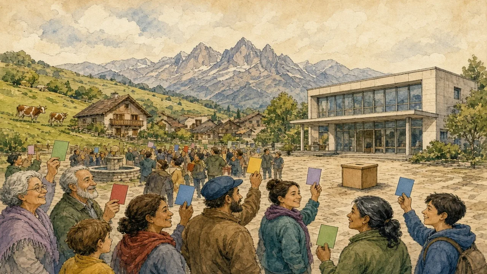

In Switzerland, people vote on laws many times a year. In most countries, they do not.
🌍 Politics map · ← Politics Around the World · Harder version (B2/C1) → · ← Two Parties or Many? · Is Voting a Duty? →

Read the sentence. What does the bold word mean? Then click Reveal.
In Switzerland, people vote on questions many times a year. A group can start a new question. It needs 100,000 signatures in 18 months. Voters decide about taxes, roads and many other things.
1. How many signatures does a group need?
2. How often do Swiss people vote?
1. 100,000.
2. Many times a year.
In most countries, people vote for politicians, not for laws. Referendums are rare. In 2016, the UK had a referendum on leaving the European Union. 52 percent voted to leave. 48 percent voted to stay.
1. Do people often vote on laws in most countries?
2. What was the result in the UK in 2016?
1. No, referendums are rare.
2. 52 percent to leave, 48 percent to stay.
Some people like referendums because people have a direct say. Other people say some questions are too difficult for yes or no. In Switzerland, women could vote in national elections only from 1971.
1. Why do some people like referendums?
2. When could Swiss women vote in national elections?
1. People have a direct say.
2. From 1971.
1. Swiss campaigners collect 100,000 signatures. (must / don't have to)
2. Swiss voters vote on every question. It is their choice. (must / don't have to)
3. People be 18 or older to vote in a Swiss national vote. (must / don't have to)
1. must
2. don't have to
3. must
1. Finish: In my country, you must ______ to vote.
2. Finish: You don't have to ______ if you do not want to.
3. Finish: A good campaign must ______.
1. ...be 18. / ...be a citizen.
2. ...vote in a referendum. / ...sign the paper.
3. ...explain the question. / ...be honest.
Tell the story to a friend. Say how Switzerland and the UK use referendums.
Use at least four key words: referendum, signature, proposal, result, campaign, citizen.
Should people vote on big questions? Give two reasons.
Choose one and talk about it:
🌍 Politics map · ← Politics Around the World · Harder version (B2/C1) → · ← Two Parties or Many? · Is Voting a Duty? →